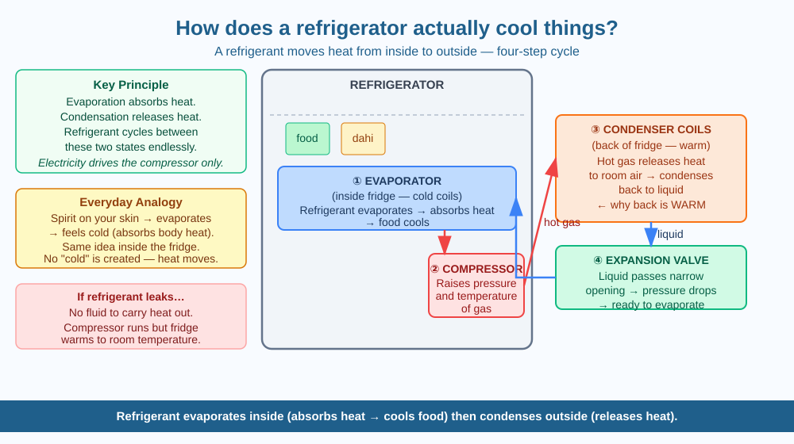

By the end of this lesson, you should be able to name the four main components of a refrigerator, describe the vapour compression cycle step by step, and explain why the back of a refrigerator is warm.
Touch the back of your refrigerator — it is warm. Open the door — it is cold inside. The fridge is not plugged into a source of cold; it is plugged into electricity. Yet it chills your food continuously. Where does the coldness come from? And why is the back warm?
The refrigerator does not "make cold" — there is no such thing as cold energy. What it does is move heat from inside the fridge to outside the fridge. It uses a clever trick based on two principles:
Evaporation absorbs heat. When a liquid evaporates (changes to gas), it absorbs energy from its surroundings. This is why your hand feels cool when a drop of spirit (surgical spirit) or water evaporates from your skin — the evaporating liquid takes heat from your skin to fuel the change of state.
Condensation releases heat. When a gas condenses (changes back to liquid), it releases that energy to its surroundings.
A refrigerator exploits both of these in a continuous cycle using a special fluid called a refrigerant — a substance with a very low boiling point that evaporates and condenses easily within the temperature range of the cycle.
The four components and the cycle:
Evaporator coils (inside the fridge cabinet): Liquid refrigerant flows into these coils at low pressure and evaporates. As it evaporates, it absorbs heat from the food and air inside the fridge. This is what makes the inside cold. The refrigerant leaves the evaporator as a cool, low-pressure gas.
Compressor (usually at the back-bottom): An electric pump compresses the refrigerant gas, raising its pressure and temperature significantly. The refrigerant is now a hot, high-pressure gas.
Condenser coils (outside the fridge, at the back): The hot, high-pressure gas flows through these coils and releases its heat to the room air. The gas condenses back into a liquid. This is why the back of your fridge is warm — it is releasing the heat removed from inside your food.
Expansion valve: The liquid refrigerant passes through a narrow opening (the expansion valve), which drops its pressure sharply. This prepares it to evaporate again in the evaporator, and the cycle repeats.
The electrical energy powers the compressor. The compressor's work drives heat from the cold interior to the warm exterior — moving heat against its natural direction (normally heat flows from hot to cold, not the other way). This is why a fridge requires energy to run.
Think of the refrigerant as a heat courier making a continuous loop:
Inside the fridge: Evaporates → picks up heat → becomes a gas (cool interior) Compressor: Gets squeezed and heated Condenser coils at the back: Releases heat to room → becomes a liquid (warm back) Expansion valve: Pressure drops → ready to evaporate again
The refrigerator is not creating coldness — it is a heat pump, constantly moving heat from inside to outside.
The included SVG shows the refrigerator as a cycle diagram: - A fridge outline (grey rectangle) with the four components labelled - Evaporator coils inside the fridge (blue, labelled "absorbs heat → food cools") - Compressor at the bottom right (labelled "raises pressure + temperature") - Condenser coils at the back (red/orange, labelled "releases heat to room") - Expansion valve as a narrow point in the circuit (labelled "pressure drops") - Arrows showing the direction of refrigerant flow around the cycle

The refrigerator compressor is an electric motor. Like any motor, it converts electrical energy into mechanical energy (compressing the gas) — but not with 100% efficiency. Some electrical energy becomes heat in the motor itself.
This means that a refrigerator running in a closed room will actually warm the room slightly over time — because the heat from inside the fridge (removed by the refrigerant) plus the heat generated by the compressor motor both end up in the room.
Predict: A student keeps a running refrigerator with its door open to "cool a room" in summer. Will this work? What will happen to the room temperature over an hour?
What is the basic mechanism by which a refrigerator cools food?
Why is understanding the refrigeration cycle more useful than knowing that a refrigerator keeps things cold?
If the refrigerant fluid in a refrigerator leaked out completely, what would you predict would happen?
Explain to a Class 4 student why the back of the fridge is warm, using only the idea that "evaporation takes heat and condensation gives it back." Then give the full explanation using the terms refrigerant, evaporator, compressor, and condenser.
The first practical mechanical refrigerator was invented in the 1850s — before most people had running water in their homes. For most of human history, "keeping food cold" meant cutting blocks of ice from rivers in winter and storing them in insulated cellars (icehouses) for summer. In Mughal India, ice was carried on horses from the Himalayas to Delhi — a journey of several days — as a luxury item for the emperor's beverages.
Evaporation absorbs heat — refrigerant evaporates inside the fridge (cools food) and condenses at the back (releases heat). The fridge is a heat pump, not a cold maker.